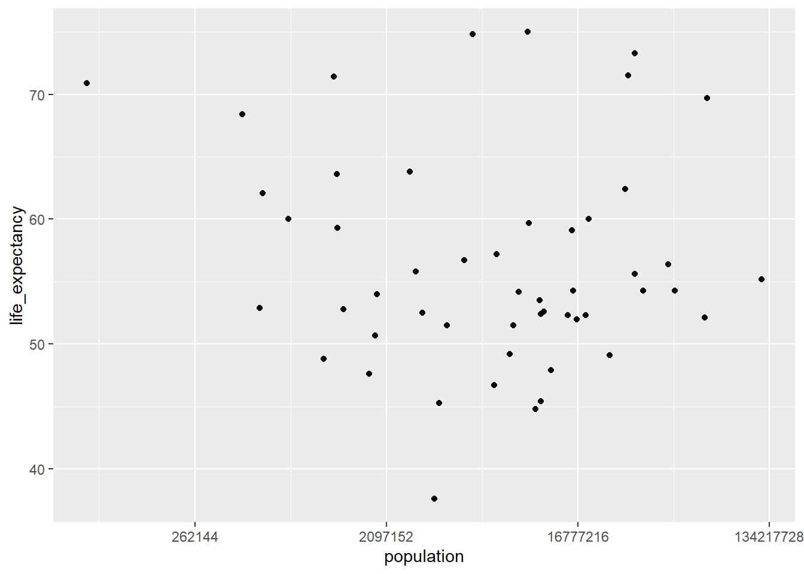

R coding Exercise
This will contain the future R coding exercise.
#Loading the dslabs package
library(dslabs)## Warning: package 'dslabs' was built under R version 4.0.5#pulling up the help page for gapminder to see what it contains
help(gapminder)## starting httpd help server ... done#Look at gapminder data structure
str(gapminder)## 'data.frame': 10545 obs. of 9 variables:
## $ country : Factor w/ 185 levels "Albania","Algeria",..: 1 2 3 4 5 6 7 8 9 10 ...
## $ year : int 1960 1960 1960 1960 1960 1960 1960 1960 1960 1960 ...
## $ infant_mortality: num 115.4 148.2 208 NA 59.9 ...
## $ life_expectancy : num 62.9 47.5 36 63 65.4 ...
## $ fertility : num 6.19 7.65 7.32 4.43 3.11 4.55 4.82 3.45 2.7 5.57 ...
## $ population : num 1636054 11124892 5270844 54681 20619075 ...
## $ gdp : num NA 1.38e+10 NA NA 1.08e+11 ...
## $ continent : Factor w/ 5 levels "Africa","Americas",..: 4 1 1 2 2 3 2 5 4 3 ...
## $ region : Factor w/ 22 levels "Australia and New Zealand",..: 19 11 10 2 15 21 2 1 22 21 ...#Obtain a summary of gapminder data
summary(gapminder)## country year infant_mortality life_expectancy
## Albania : 57 Min. :1960 Min. : 1.50 Min. :13.20
## Algeria : 57 1st Qu.:1974 1st Qu.: 16.00 1st Qu.:57.50
## Angola : 57 Median :1988 Median : 41.50 Median :67.54
## Antigua and Barbuda: 57 Mean :1988 Mean : 55.31 Mean :64.81
## Argentina : 57 3rd Qu.:2002 3rd Qu.: 85.10 3rd Qu.:73.00
## Armenia : 57 Max. :2016 Max. :276.90 Max. :83.90
## (Other) :10203 NA's :1453
## fertility population gdp continent
## Min. :0.840 Min. :3.124e+04 Min. :4.040e+07 Africa :2907
## 1st Qu.:2.200 1st Qu.:1.333e+06 1st Qu.:1.846e+09 Americas:2052
## Median :3.750 Median :5.009e+06 Median :7.794e+09 Asia :2679
## Mean :4.084 Mean :2.701e+07 Mean :1.480e+11 Europe :2223
## 3rd Qu.:6.000 3rd Qu.:1.523e+07 3rd Qu.:5.540e+10 Oceania : 684
## Max. :9.220 Max. :1.376e+09 Max. :1.174e+13
## NA's :187 NA's :185 NA's :2972
## region
## Western Asia :1026
## Eastern Africa : 912
## Western Africa : 912
## Caribbean : 741
## South America : 684
## Southern Europe: 684
## (Other) :5586#check what class is gapminder data
class(gapminder)## [1] "data.frame"#Loading the dplyr package
library(dplyr)##
## Attaching package: 'dplyr'## The following objects are masked from 'package:stats':
##
## filter, lag## The following objects are masked from 'package:base':
##
## intersect, setdiff, setequal, union#assigning African Countries to a new object
africadata <- subset(gapminder, continent == "Africa")#look at data structure of “africadata”
str(africadata)## 'data.frame': 2907 obs. of 9 variables:
## $ country : Factor w/ 185 levels "Albania","Algeria",..: 2 3 18 22 26 27 29 31 32 33 ...
## $ year : int 1960 1960 1960 1960 1960 1960 1960 1960 1960 1960 ...
## $ infant_mortality: num 148 208 187 116 161 ...
## $ life_expectancy : num 47.5 36 38.3 50.3 35.2 ...
## $ fertility : num 7.65 7.32 6.28 6.62 6.29 6.95 5.65 6.89 5.84 6.25 ...
## $ population : num 11124892 5270844 2431620 524029 4829291 ...
## $ gdp : num 1.38e+10 NA 6.22e+08 1.24e+08 5.97e+08 ...
## $ continent : Factor w/ 5 levels "Africa","Americas",..: 1 1 1 1 1 1 1 1 1 1 ...
## $ region : Factor w/ 22 levels "Australia and New Zealand",..: 11 10 20 17 20 5 10 20 10 10 ...#Obtain a summary of “africadata”
summary(africadata)## country year infant_mortality life_expectancy
## Algeria : 57 Min. :1960 Min. : 11.40 Min. :13.20
## Angola : 57 1st Qu.:1974 1st Qu.: 62.20 1st Qu.:48.23
## Benin : 57 Median :1988 Median : 93.40 Median :53.98
## Botswana : 57 Mean :1988 Mean : 95.12 Mean :54.38
## Burkina Faso: 57 3rd Qu.:2002 3rd Qu.:124.70 3rd Qu.:60.10
## Burundi : 57 Max. :2016 Max. :237.40 Max. :77.60
## (Other) :2565 NA's :226
## fertility population gdp continent
## Min. :1.500 Min. : 41538 Min. :4.659e+07 Africa :2907
## 1st Qu.:5.160 1st Qu.: 1605232 1st Qu.:8.373e+08 Americas: 0
## Median :6.160 Median : 5570982 Median :2.448e+09 Asia : 0
## Mean :5.851 Mean : 12235961 Mean :9.346e+09 Europe : 0
## 3rd Qu.:6.860 3rd Qu.: 13888152 3rd Qu.:6.552e+09 Oceania : 0
## Max. :8.450 Max. :182201962 Max. :1.935e+11
## NA's :51 NA's :51 NA's :637
## region
## Eastern Africa :912
## Western Africa :912
## Middle Africa :456
## Northern Africa :342
## Southern Africa :285
## Australia and New Zealand: 0
## (Other) : 0#developing new variable containing infant mortality and life expectancy
Infantmortality <- select(africadata, infant_mortality, life_expectancy)#developing new variable containing population and life expectancy
Population <- select(africadata, population, life_expectancy)#Look at the data structure and summary of two newly developed variables
str(Infantmortality)## 'data.frame': 2907 obs. of 2 variables:
## $ infant_mortality: num 148 208 187 116 161 ...
## $ life_expectancy : num 47.5 36 38.3 50.3 35.2 ...summary(Infantmortality)## infant_mortality life_expectancy
## Min. : 11.40 Min. :13.20
## 1st Qu.: 62.20 1st Qu.:48.23
## Median : 93.40 Median :53.98
## Mean : 95.12 Mean :54.38
## 3rd Qu.:124.70 3rd Qu.:60.10
## Max. :237.40 Max. :77.60
## NA's :226str(Population)## 'data.frame': 2907 obs. of 2 variables:
## $ population : num 11124892 5270844 2431620 524029 4829291 ...
## $ life_expectancy: num 47.5 36 38.3 50.3 35.2 ...summary(Population)## population life_expectancy
## Min. : 41538 Min. :13.20
## 1st Qu.: 1605232 1st Qu.:48.23
## Median : 5570982 Median :53.98
## Mean : 12235961 Mean :54.38
## 3rd Qu.: 13888152 3rd Qu.:60.10
## Max. :182201962 Max. :77.60
## NA's :51#loading the ggplot2 package
library(ggplot2)#developing plot of life expectancy as a function of infant mortality
ggplot(data = Infantmortality) +
geom_point(mapping = aes(x = infant_mortality, y = life_expectancy))## Warning: Removed 226 rows containing missing values (geom_point).
#developing plot of life expectancy as a function of population size
plot2 <- ggplot(data = Population) +
geom_point(mapping = aes(x = population, y = life_expectancy))#setting the x-axis to a log scale
plot2 + scale_x_continuous(trans='log2')## Warning: Removed 51 rows containing missing values (geom_point). #checking missing data for infant mortality
#checking missing data for infant mortality
sum(is.na(africadata$infant_mortality))## [1] 226#extracting data for only year 2000
data2000 <- subset(africadata, year == "2000")#checking structure of data from year 2000
str(data2000)## 'data.frame': 51 obs. of 9 variables:
## $ country : Factor w/ 185 levels "Albania","Algeria",..: 2 3 18 22 26 27 29 31 32 33 ...
## $ year : int 2000 2000 2000 2000 2000 2000 2000 2000 2000 2000 ...
## $ infant_mortality: num 33.9 128.3 89.3 52.4 96.2 ...
## $ life_expectancy : num 73.3 52.3 57.2 47.6 52.6 46.7 54.3 68.4 45.3 51.5 ...
## $ fertility : num 2.51 6.84 5.98 3.41 6.59 7.06 5.62 3.7 5.45 7.35 ...
## $ population : num 31183658 15058638 6949366 1736579 11607944 ...
## $ gdp : num 5.48e+10 9.13e+09 2.25e+09 5.63e+09 2.61e+09 ...
## $ continent : Factor w/ 5 levels "Africa","Americas",..: 1 1 1 1 1 1 1 1 1 1 ...
## $ region : Factor w/ 22 levels "Australia and New Zealand",..: 11 10 20 17 20 5 10 20 10 10 ...#obtaining summary of data from year 2000
summary(data2000)## country year infant_mortality life_expectancy
## Algeria : 1 Min. :2000 Min. : 12.30 Min. :37.60
## Angola : 1 1st Qu.:2000 1st Qu.: 60.80 1st Qu.:51.75
## Benin : 1 Median :2000 Median : 80.30 Median :54.30
## Botswana : 1 Mean :2000 Mean : 78.93 Mean :56.36
## Burkina Faso: 1 3rd Qu.:2000 3rd Qu.:103.30 3rd Qu.:60.00
## Burundi : 1 Max. :2000 Max. :143.30 Max. :75.00
## (Other) :45
## fertility population gdp continent
## Min. :1.990 Min. : 81154 Min. :2.019e+08 Africa :51
## 1st Qu.:4.150 1st Qu.: 2304687 1st Qu.:1.274e+09 Americas: 0
## Median :5.550 Median : 8799165 Median :3.238e+09 Asia : 0
## Mean :5.156 Mean : 15659800 Mean :1.155e+10 Europe : 0
## 3rd Qu.:5.960 3rd Qu.: 17391242 3rd Qu.:8.654e+09 Oceania : 0
## Max. :7.730 Max. :122876723 Max. :1.329e+11
##
## region
## Eastern Africa :16
## Western Africa :16
## Middle Africa : 8
## Northern Africa : 6
## Southern Africa : 5
## Australia and New Zealand: 0
## (Other) : 0#ploting the relationship between infant mortality and life expectancy
ggplot(data = data2000) +
geom_point(mapping = aes(x = infant_mortality, y = life_expectancy))
#plotting the relationship between population size and life expectancy
plot2 <- ggplot(data = data2000) +
geom_point(mapping = aes(x = population, y = life_expectancy))#changing x-axis scale to log
plot2 + scale_x_continuous(trans='log2')
#fitting a linear model between infant mortality vs. life expectancy and population size vs. life expectancy
fit1 = lm(data = data2000, life_expectancy ~ infant_mortality)
fit2 = lm(data = data2000, life_expectancy ~ population)#obtaining fit results for both the models
summary(fit1)##
## Call:
## lm(formula = life_expectancy ~ infant_mortality, data = data2000)
##
## Residuals:
## Min 1Q Median 3Q Max
## -22.6651 -3.7087 0.9914 4.0408 8.6817
##
## Coefficients:
## Estimate Std. Error t value Pr(>|t|)
## (Intercept) 71.29331 2.42611 29.386 < 2e-16 ***
## infant_mortality -0.18916 0.02869 -6.594 2.83e-08 ***
## ---
## Signif. codes: 0 '***' 0.001 '**' 0.01 '*' 0.05 '.' 0.1 ' ' 1
##
## Residual standard error: 6.221 on 49 degrees of freedom
## Multiple R-squared: 0.4701, Adjusted R-squared: 0.4593
## F-statistic: 43.48 on 1 and 49 DF, p-value: 2.826e-08summary(fit2)##
## Call:
## lm(formula = life_expectancy ~ population, data = data2000)
##
## Residuals:
## Min 1Q Median 3Q Max
## -18.429 -4.602 -2.568 3.800 18.802
##
## Coefficients:
## Estimate Std. Error t value Pr(>|t|)
## (Intercept) 5.593e+01 1.468e+00 38.097 <2e-16 ***
## population 2.756e-08 5.459e-08 0.505 0.616
## ---
## Signif. codes: 0 '***' 0.001 '**' 0.01 '*' 0.05 '.' 0.1 ' ' 1
##
## Residual standard error: 8.524 on 49 degrees of freedom
## Multiple R-squared: 0.005176, Adjusted R-squared: -0.01513
## F-statistic: 0.2549 on 1 and 49 DF, p-value: 0.6159based on the p-values of the two models we conclude that there is a statistically significant inverse relationship between infant mortality and life expectancy. whereas there is no clear relationship between population size and life expectancy
New Section: Amanda Glatter
Additional Plots
Create a scatterplot to compare fertility and life expectancy in Africa in 2000.
flplot <- ggplot(data = data2000) + geom_point(mapping = aes(x = fertility, y = life_expectancy)) + xlab("Fertility") + ylab("Life Expectancy") + ggtitle("Life Expectancy vs. Fertility in African Countries in 2000")
print(flplot)Is this relationship statistically significant?
fit3 <- lm(fertility ~ life_expectancy, data = data2000)
summary(fit3)##
## Call:
## lm(formula = fertility ~ life_expectancy, data = data2000)
##
## Residuals:
## Min 1Q Median 3Q Max
## -2.7377 -0.5963 0.1641 0.8128 2.1255
##
## Coefficients:
## Estimate Std. Error t value Pr(>|t|)
## (Intercept) 11.53449 1.05491 10.934 9.56e-15 ***
## life_expectancy -0.11317 0.01851 -6.113 1.57e-07 ***
## ---
## Signif. codes: 0 '***' 0.001 '**' 0.01 '*' 0.05 '.' 0.1 ' ' 1
##
## Residual standard error: 1.108 on 49 degrees of freedom
## Multiple R-squared: 0.4327, Adjusted R-squared: 0.4211
## F-statistic: 37.37 on 1 and 49 DF, p-value: 1.568e-07Based on fit3, there is a statistically significant relationship between fertility and life expectancy in Africa in 2000.
Let’s take a closer look at life expectancy vs. infant mortality on a different continent and see if the relationship is still significant in 2000. In this case, we will look at Asia.
asiadata <- gapminder %>% subset(continent == "Asia")
asia_life <- asiadata%>% filter(year==2000)
asia_lifeplot <- asia_life %>% ggplot(aes(x=infant_mortality, y=life_expectancy)) + geom_point() + ggtitle("Life Expectancy vs. Infant Mortality in Asia in 2000") + xlab("Infant Mortality") + ylab("Life Expectancy")
print(asia_lifeplot)## Warning: Removed 2 rows containing missing values (geom_point).fit_asia <- lm(infant_mortality~life_expectancy, data=asia_life)
summary(fit_asia)##
## Call:
## lm(formula = infant_mortality ~ life_expectancy, data = asia_life)
##
## Residuals:
## Min 1Q Median 3Q Max
## -18.4143 -6.4347 0.3672 6.6751 21.9563
##
## Coefficients:
## Estimate Std. Error t value Pr(>|t|)
## (Intercept) 313.3925 17.8993 17.51 <2e-16 ***
## life_expectancy -3.9673 0.2544 -15.59 <2e-16 ***
## ---
## Signif. codes: 0 '***' 0.001 '**' 0.01 '*' 0.05 '.' 0.1 ' ' 1
##
## Residual standard error: 10 on 43 degrees of freedom
## (2 observations deleted due to missingness)
## Multiple R-squared: 0.8497, Adjusted R-squared: 0.8462
## F-statistic: 243.1 on 1 and 43 DF, p-value: < 2.2e-16Like for the African country data in 2000, Asian countries show a significant relationship between life expectancy and infant mortality in 2000 (p<2.2e-16).
For fun, let’s break down how life expectancy changes over time, but let’s break this information down by region of Africa.
northern <- africadata %>% select(year, country, life_expectancy, region) %>% filter(region == "Northern Africa") %>% ggplot(aes(x = year, y = life_expectancy, color = country)) + geom_point() + xlab("Year") + ylab("Life Expectancy") + ggtitle("Life Expectancy over Time in Northern Africa")
print(northern)southern <- africadata %>% select(year, country, life_expectancy, region) %>% filter(region == "Southern Africa") %>% ggplot(aes(x = year, y = life_expectancy, color = country)) + geom_point() + xlab("Year") + ylab("Life Expectancy") + ggtitle("Life Expectancy over Time in Southern Africa")
print(southern)western <- africadata %>% select(year, country, life_expectancy, region) %>% filter(region == "Western Africa") %>% ggplot(aes(x = year, y = life_expectancy, color = country)) + geom_point() + xlab("Year") + ylab("Life Expectancy") + ggtitle("Life Expectancy over Time in Western Africa")
print(western)eastern <- africadata %>% select(year, country, life_expectancy, region) %>% filter(region == "Eastern Africa") %>% ggplot(aes(x = year, y = life_expectancy, color = country)) + geom_point() + xlab("Year") + ylab("Life Expectancy") + ggtitle("Life Expectancy over Time in Eastern Africa")
print(eastern)